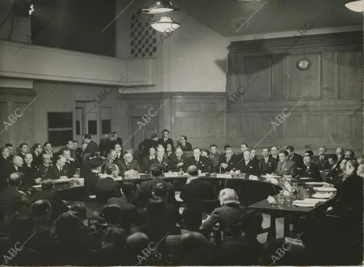

Geopolitics is the study of how geography, power, and politics influence relations between countries. It helps explain why states cooperate or compete on the international stage and how factors such as location, borders, climate, access to seas, and natural resources affect global decision-making. Throughout history, geography has shaped the rise and fall of empires, determined trade routes, and influenced military strategies.
In the modern world, geopolitics also includes economic power, technological development, and political influence. Countries use diplomacy, trade agreements, and strategic alliances to protect their interests and expand their influence beyond their borders. Understanding geopolitics allows societies to better analyze global conflicts, international cooperation, and the balance of power that shapes today’s world
.

First meeting of the ONU 1946
“The United Nations represents the hope of humanity to avoid another world war.”
International organizations such as the United Nations aim to promote peace, security, and cooperation among countries. These institutions provide platforms for dialogue, negotiation, and conflict resolution, helping states address international problems through peaceful means. They also play an important role in humanitarian aid, human rights protection, and international development.
Despite these efforts, global challenges such as armed conflicts, climate change, economic inequality, and migration continue to affect international relations. Differences in political systems, economic interests, and cultural values often make cooperation difficult. As a result, geopolitics remains essential for understanding how countries interact and how global stability can be maintained in an increasingly interconnected world.